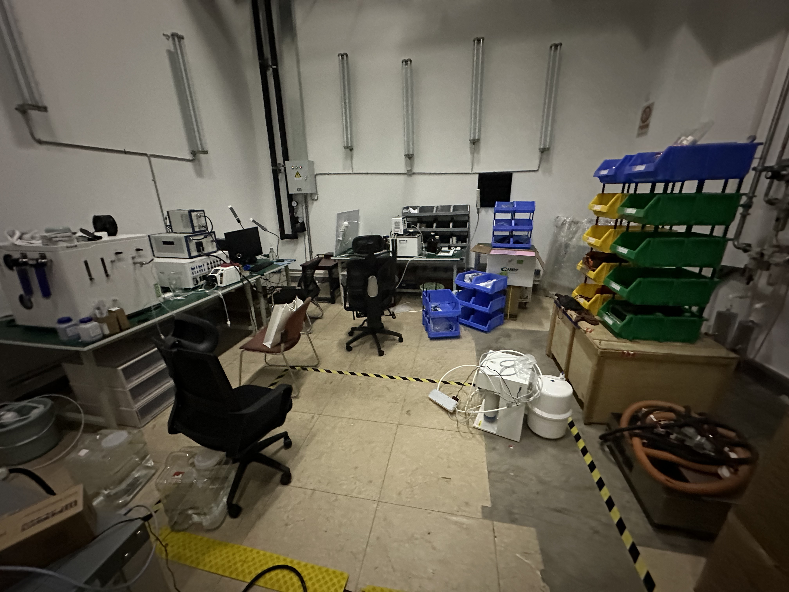
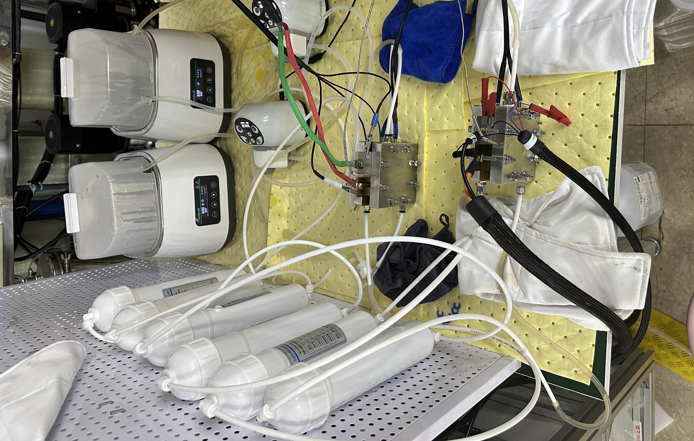
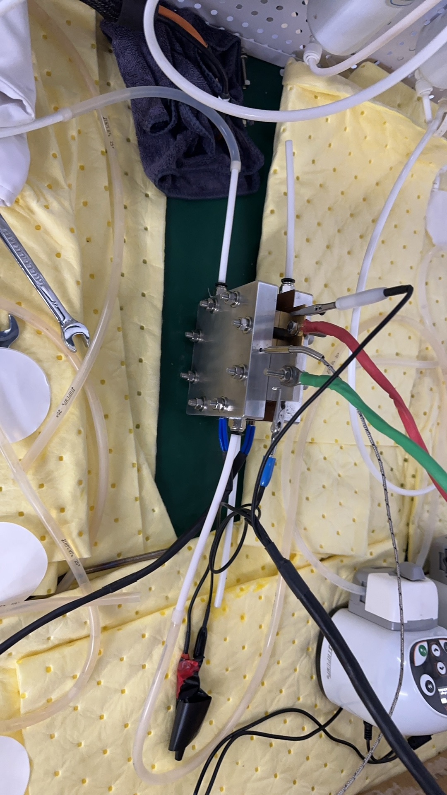
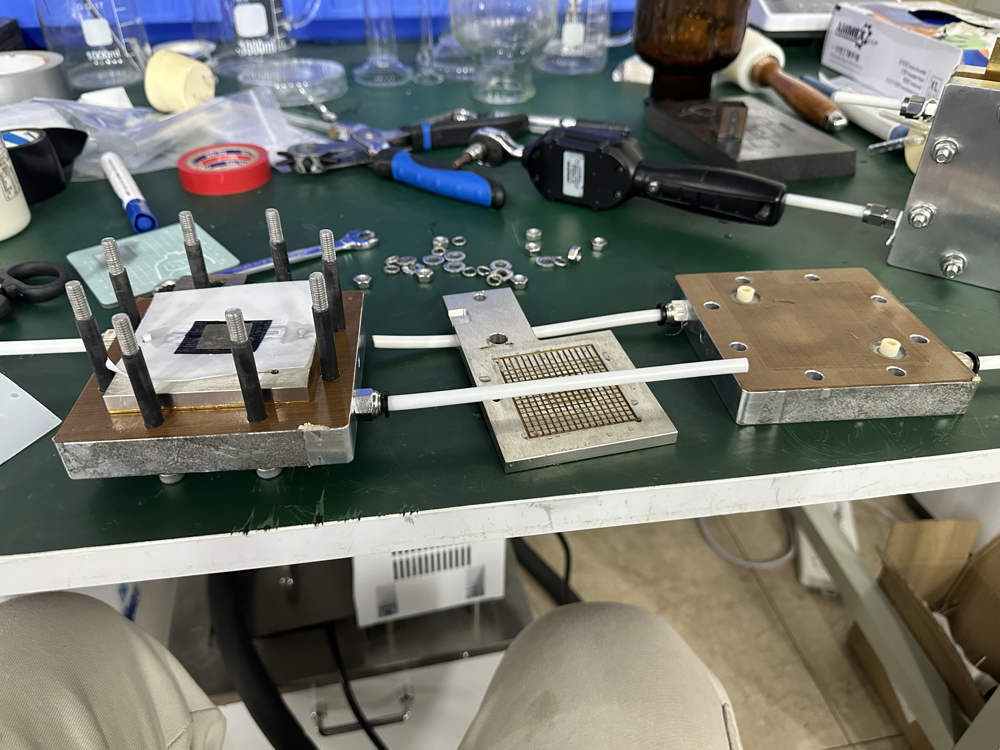

ION DETECT PEM Electrolyzer
PEM Electrolyzer Disassembly— Brand A
PEM Electrolyzer Assembly— Brand A
PEM Electrolyzer Disassembly— Brand B

First image.

Second image.

Third image.

Fourth image.

Fifth image.
BibTeX
If you find this work useful, please cite the published version.
@article{wang2026psldm,
title = {A Physics-Structured Latent Dynamics Model for Ion Contamination Diagnosis in Proton Exchange Membrane Water Electrolyzers},
author = {Wang, Ruyi and Zhu, Jiangong and Zhang, Haoyu and Wang, Chao and Wu, Xiaoping and Wu, Ming and Xu, Jianqiang and Yuan, Hao and Liu, Wei and Dai, Haifeng and Wei, Xuezhe},
journal = {Journal of Power Sources},
volume = {677},
pages = {240008},
year = {2026},
doi = {10.1016/j.jpowsour.2026.240008},
url = {https://www.sciencedirect.com/science/article/pii/S0378775326007585}
}
@article{wang2026psldm_ssrn,
title = {A Physics-Structured Latent State World Model for Ion Fault Diagnosis in PEM Electrolyzers},
author = {Wang, Ruyi and Zhu, Jiangong and Zhang, Haoyu and Wang, Chao and Wu, Xiaoping and Wu, Ming and Xu, Jianqiang and Yuan, Hao and Liu, Wei and Dai, Haifeng and Wei, Xuezhe},
journal = {SSRN Electronic Journal},
year = {2026},
note = {Preprint},
url = {https://papers.ssrn.com/sol3/papers.cfm?abstract_id=6067174}
}